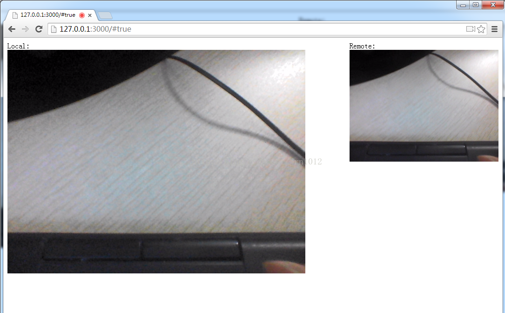

webrtc是什么？
浏览器与浏览器之间（peer-to-peer）的信道，这个信道可以发送任何数据，而不需要经过服务器。并且WebRTC通过实现MediaStream，通过浏览器调用设备的摄像头、话筒，使得浏览器之间可以传递音频和视频
WebRTC实现了三个核心API
- MediaStream：通过MediaStream的API能够通过设备的摄像头及话筒获得视频、音频的同步流
- RTCPeerConnection：RTCPeerConnection是WebRTC用于构建点对点之间稳定、高效的流传输的组件
- RTCDataChannel：RTCDataChannel使得浏览器之间（点对点）建立一个高吞吐量、低延时的信道，用于传输任意

网上关于WebRTC的示例大多代码较多，以下是参考那些代码简化的一个WebRTC一对一的示例，在chrome 37下测试通过。其中iceServer可省略，没有iceServer时在同一个局域网下仍可通讯。
客户端代码：
<html>
<body>
Local: <br>
<video id="localVideo" autoplay></video><br>
Remote: <br>
<video id="remoteVideo" autoplay></video>
<script>
// 仅仅用于控制哪一端的浏览器发起offer，#号后面有值的一方发起
var isCaller = window.location.href.split('#')[1];
// 与信令服务器的WebSocket连接
var socket = new WebSocket("ws://127.0.0.1:3000");
// stun和turn服务器
var iceServer = {
"iceServers": [{
"url": "stun:stun.l.google.com:19302"
}, {
"url": "turn:numb.viagenie.ca",
"username": "webrtc@live.com",
"credential": "muazkh"
}]
};
// 创建PeerConnection实例 (参数为null则没有iceserver，即使没有stunserver和turnserver，仍可在局域网下通讯)
var pc = new webkitRTCPeerConnection(iceServer);
// 发送ICE候选到其他客户端
pc.onicecandidate = function(event){
if (event.candidate !== null) {
socket.send(JSON.stringify({
"event": "_ice_candidate",
"data": {
"candidate": event.candidate
}
}));
}
};
// 如果检测到媒体流连接到本地，将其绑定到一个video标签上输出
pc.onaddstream = function(event){
document.getElementById('remoteVideo').src = URL.createObjectURL(event.stream);
};
// 发送offer和answer的函数，发送本地session描述
var sendOfferFn = function(desc){
pc.setLocalDescription(desc);
socket.send(JSON.stringify({
"event": "_offer",
"data": {
"sdp": desc
}
}));
},
sendAnswerFn = function(desc){
pc.setLocalDescription(desc);
socket.send(JSON.stringify({
"event": "_answer",
"data": {
"sdp": desc
}
}));
};
// 获取本地音频和视频流
navigator.webkitGetUserMedia({
"audio": true,
"video": true
}, function(stream){
//绑定本地媒体流到video标签用于输出
document.getElementById('localVideo').src = URL.createObjectURL(stream);
//向PeerConnection中加入需要发送的流
pc.addStream(stream);
//如果是发起方则发送一个offer信令
if(isCaller){
pc.createOffer(sendOfferFn, function (error) {
console.log('Failure callback: ' + error);
});
}
}, function(error){
//处理媒体流创建失败错误
console.log('getUserMedia error: ' + error);
});
//处理到来的信令
socket.onmessage = function(event){
var json = JSON.parse(event.data);
console.log('onmessage: ', json);
//如果是一个ICE的候选，则将其加入到PeerConnection中，否则设定对方的session描述为传递过来的描述
if( json.event === "_ice_candidate" ){
pc.addIceCandidate(new RTCIceCandidate(json.data.candidate));
} else {
pc.setRemoteDescription(new RTCSessionDescription(json.data.sdp));
// 如果是一个offer，那么需要回复一个answer
if(json.event === "_offer") {
pc.createAnswer(sendAnswerFn, function (error) {
console.log('Failure callback: ' + error);
});
}
}
};
</script>
</body>
</html>
实现WebRTC时，信令服务器是必须的，它帮助客户端之间进行沟通。
这里使用Node.js的ws模块来实现一个WebSocket服务作为信令服务器。另外使用express模块让它提供html页面的访问。
服务端代码如下：
var express = require('express'),
app = express(),
server = require('http').createServer(app);
server.listen(3000);
app.get('/', function(req, res) {
res.sendfile(__dirname + '/webrtc.html');
});
var WebSocketServer = require('ws').Server,
wss = new WebSocketServer({server: server});
// 存储socket的数组，这里只能有2个socket，每次测试需要重启，否则会出错
var wsc = [],
index = 1;
// 有socket连入
wss.on('connection', function(ws) {
console.log('connection');
// 将socket存入数组
wsc.push(ws);
// 记下对方socket在数组中的下标，因为这个测试程序只允许2个socket
// 所以第一个连入的socket存入0，第二个连入的就是存入1
// otherIndex就反着来，第一个socket的otherIndex下标为1，第二个socket的otherIndex下标为0
var otherIndex = index--,
desc = null;
if (otherIndex == 1) {
desc = 'first socket';
} else {
desc = 'second socket';
}
// 转发收到的消息
ws.on('message', function(message) {
var json = JSON.parse(message);
console.log('received (' + desc + '): ', json);
wsc[otherIndex].send(message, function (error) {
if (error) {
console.log('Send message error (' + desc + '): ', error);
}
});
});
});
使用npm安装需要的模块后使用node server.js启动服务。
测试时使用Chrome浏览器：
第一个浏览器窗口访问页面：http://127.0.0.1:3000，在弹出的提示中允许使用摄像头和麦克风。
第二个浏览器窗口访问页面：http://127.0.0.1:3000#true，#true表示它是一个发起方，在弹出的提示中同样允许使用摄像头和麦克风。
这时页面中应当可以看到2个画面，一个是本地的，一个是远端的。
将代码中的IP稍做调整后部署到外网，即可在2个不同的地点访问这个页面进行实时通讯。